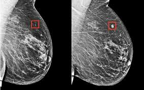

Önemli Bilgiler
Meme kanseri hakkında bilmeniz gerekenler

Erken Teşhisin Önemi
Meme kanserinde erken tanı, tedavi başarısını artırır.
Detaylı Bilgi
Düzenli kontroller, mamografi ve ultrason ile erken teşhis mümkündür. 40 yaş üstü her yıl kontrol önerilir.
- Düzenli kontroller
- Mamografi taraması
- Ultrason kontrolü

Ultrason Görüntülemesi
Kitlelerin tespiti için güvenilir ve yaygın bir yöntemdir.
Detaylı Bilgi
Ultrason, meme dokusunu ayrıntılı şekilde gösterir. Özellikle genç kadınlarda yoğun doku için tercih edilir.
- Ağrısız işlem
- Detaylı görüntüleme
- Güvenli yöntem
Yapay Zeka ile Analiz
AI sistemleri doktorlara tanı koymada yardımcı olur.
Detaylı Bilgi
Yapay zeka modelleri, görüntüleri analiz ederek kitleleri sınıflandırabilir ve şüpheli alanları işaretleyebilir.
- Hızlı analiz
- Yüksek doğruluk
- Sürekli öğrenme